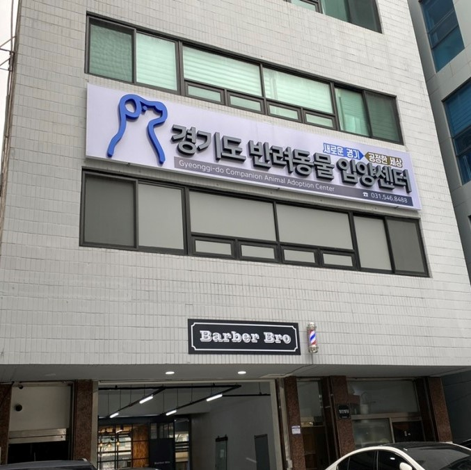
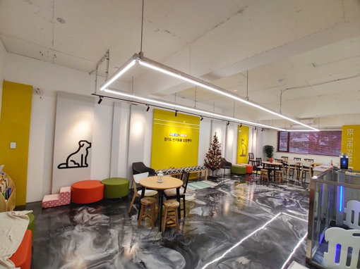

.jpg)
농림축산부의 2014년부터 2019년 8월까지의 통계에 따르면, 유기 동물이 많은 지자체로서 광역단체의 경우 경기도(9만6691마리)가 1위를 차지했다.
각 지자체는 보호 중인 유기동물을 7일 동안 공고한 뒤 열흘 이상 주인 또는 입양자가 나타나지 않을 경우 안락사를 시행할 수 있고,
최근 6년간 안락사한 반려동물이 많은 광역단체에 경기도가 (2만8833마리)로 다시 한 번 1위를 차지했다.
이어 유기 동물이 많은 시·군·구로 분류한 경우, 경기 평택시(9365마리)와 전북 전주시(6968마리), 충북 청주시(6590마리), 경기 수원시(6519마리) 등의 순이었다.
수원시는 특례시로 지정될 만큼 인구가 많은 도시지만 사설로 운영되는 유기 동물 보호소 외에 정부 지원을 받는 보호소가 없었다.
그러다가 지난 해에 경기도(도지사 이재명)가 직접 운영하는 유기 동물 입양 센터(경기도 반려동물 입양센터)가 수원 인계동에 문을 열었다.
경기도 반려동물 입양 센터는 수원시 팔달구 인계동 경수대로 460에 위치한 건물 2~3층에서 운영 중이다(총 362㎡(110평 : 층별 55평)).
(수원시청역에서 도보로 10분 정도면 도착할 수 있다.)
센터는 유기동물 입양·보호공간, 미용·목욕실, 놀이터, 상담실, 사무실, 반려동물 문화센터 등을 갖췄고
센터에서는 유기동물 분양과 함께 동물생명 존중 교육 등 올바른 반려동물 문화정착을 위한 문화교육 프로그램도 진행된다.
경기도는 센터를 통해 청소년들이 자원봉사도 하고 진로탐색 활동도 할 수 있도록 도울 방침이다.
입양센터 자원봉사 신청은 1365 자원봉사 포털 사이트에서 할 수 있다.(현재는 성인에 한해 봉사 신청을 받고 있다)
경기도 반려동물 입양센터에 입소되고 새가족에게 입양되기 까지의 과정은 아래와 같다.
길거리나 위험한 상황에서 구조된 유기견 동물보호센터에서 가족을 찾는 공고 기간을 거친 뒤 끝내 가족이 나타나지 않으면 화성에 위치한 '경기도 도우미견나눔센터'로 온다.
3주 동안 받은 기본 행동교육을 유기견은 건강검진, 중성화 수술, 구충·예방접종, 반려동물 등록 내장협칩 시술 등을 거친 뒤 입양센터에서 새 가족을 기다린다.
누구나 강아지를 입양할 수 있지만, 강아지마다 특성이 다르기 때문에 철저한 절차를 거쳐 입양이 이뤄진다.
예를 들어 예민한 성격의 강아지는 아이가 있거나 반려동물을 한 번도 키워본 적 없는 초보 가족에는 입양하지 않는다.
가족과 맞지 않아 파양되는 경우를 막기 위해서다.
입양 전 반려동물과 새 가족이 만나 산책 등 시간을 보내면서 맞춰가고, 이 과정에서 보호자 교육도 진행된다.
입양을 희망하는 도민은 반려동물 입양센터를 직접 방문하거나 네이버카페(cafe.naver.com/ggpetadoptioncenter)를 통해 입양신청서를 작성해 제출하면 상담을 통해 입양을 확정하게 된다. 이후 입양 전 예비보호자 교육을 받고 사료와 간식, 목줄 등 기본물품을 전달받으면 된다.
입양센터는 지난 3월까지 모두 59마리의 강아지를 입양시켰고, 현재 9마리를 보호하고 있다.

